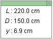
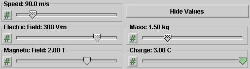
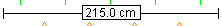

There are four basic control buttons. One of these, the Play/Pause button, is a dual button. The buttons are, from left to right:
-
 Returns
the simulation to the starting point with the
previously chosen initial values and system parameters.
Rewind makes it easy to compare motions that differ in
the setting of just one parameter. After clicking
Rewind, click Play to restart the motion or Step to go
through the motion one step at a time.
Returns
the simulation to the starting point with the
previously chosen initial values and system parameters.
Rewind makes it easy to compare motions that differ in
the setting of just one parameter. After clicking
Rewind, click Play to restart the motion or Step to go
through the motion one step at a time.
-
 Clicking
the Play button starts the motion of the particle. The
particle is released by a source on the left, moves
through a pair of parallel plates (parallel plates
capacitor), and then on to a screen on the right. The
screen is located where the y-axis is drawn.
Clicking
the Play button starts the motion of the particle. The
particle is released by a source on the left, moves
through a pair of parallel plates (parallel plates
capacitor), and then on to a screen on the right. The
screen is located where the y-axis is drawn.
 After
the Play button has been clicked, it changes into a
Pause button. Click the Pause button if you want to
get a 'snapshot' of the motion at a given instant.
When the Pause button has been clicked, it reverts
into the Play button. To resume the motion, click
Play once more.
After
the Play button has been clicked, it changes into a
Pause button. Click the Pause button if you want to
get a 'snapshot' of the motion at a given instant.
When the Pause button has been clicked, it reverts
into the Play button. To resume the motion, click
Play once more.
-
 Lets you
step through the motion in equal time steps.
Lets you
step through the motion in equal time steps.
-
 Resets
the applet to its default setting. The button is on the
far right so that it does not get pressed accidentally
in place of Rewind.
Resets
the applet to its default setting. The button is on the
far right so that it does not get pressed accidentally
in place of Rewind.
Adjustments in the initial conditions and system parameters can only be made after first clicking REWIND or RESET.


The Trace toggle button displays/hides the particle's path in blue. Clicking the Rewind button does not erase the path.

The Velocity toggle button displays/hides the velocity vector (magenta).

The Data toggle button displays/hides the Data box shown below. The Data box can also be closed by clicking in the little square marked by an "X" in the top right corner of the box. The Data box can be dragged anywhere withing the applet window.

The following quantities are displayed in the Data box:
- L: width of the capacitor plates, i.e., width of the region where the electric field is non-zero. The applet takes the region where the magnetic is non-zero to be identical with the region where the electric field is non-zero. Physically, this is not realistic. Both fields are assumed to be uniform in this region.
- D: horizontal distance from the right edge of the capacitor plates, i.e., from the region where the fields are non-zero, to the observation screen (not to be confused with the screen of the monitor in front of you). The location of the observation screen in the applet coincides with that of the y-axis.
- y: vertical deflection of the particle when it hits the observation screen. The y = 0 posiition on the y-axis corresponds to the straight-through undeflected direction.
There are five sliders, shown in the following image. Clicking on a slider to the left or right of the slider tab allows fine adjustment of the slider setting.

Clicking on the Input Dialog button  of a slider will open a dialog for entering an
exact value for the slider setting. The dialog for the
v-slider is illustrated below. The range in which
values can be entered, from 50.0 m/s to 300.0 m/s in this
case, is indicated above the data entry field.
of a slider will open a dialog for entering an
exact value for the slider setting. The dialog for the
v-slider is illustrated below. The range in which
values can be entered, from 50.0 m/s to 300.0 m/s in this
case, is indicated above the data entry field.

The five sliders in the control panel allow you to adjust the values of the following quantities.
- Speed. The incoming speed v of the particle can be varied between 50.0 m/s and 300.0 m/s in steps of 0.1 m/s. The incoming direction of the particle cannot be varied. It is fixed to be in the x-direction and to the right.
-
Electric field. The electric field
 in the applet is always
vertical on the screen, so that only its
y-component is non-zero. The y-axis
points upward and is indicated in the applet window.
in the applet is always
vertical on the screen, so that only its
y-component is non-zero. The y-axis
points upward and is indicated in the applet window.
The field is confined to the region between the capacitor plates. It is indicated by small green arrows in the region between the plates. The applet takes the field to be uniform everywhere between the plates and zero everywhere else. The electric charges on the capacitor plates that give rise to the field are indicated by plus and minus signs.
The y-component Ey of the electric field can be varied between -300 V/m and 300 V/m. The y-axis points upward and is indicated in the applet window.
-
Magnetic field. The magnetic field
 is always perpendicular to
the monitor screen and confined to the region between
the capacitor plates. The field is indicated by the
small orange circles (field pointing out of the monitor
screen) or orange x's (field pointing into the monitor
screen). The applet takes the field to be uniform
everywhere between the plates and zero everywhere else.
is always perpendicular to
the monitor screen and confined to the region between
the capacitor plates. The field is indicated by the
small orange circles (field pointing out of the monitor
screen) or orange x's (field pointing into the monitor
screen). The applet takes the field to be uniform
everywhere between the plates and zero everywhere else.
Imagine a z-axis that is perpendicular to the monitor screen and pointing out of the screen. The z-component Bz of the magnetic field can be varied between -5.00 T and 5.00 T.
- Mass. The mass m of the particle can be varied between 1.00 kg and 3.00 kg in steps of 0.01 kg.
-
Charge. The charge q of the particle can
be varied between -3.00 C and 3.00 C in steps of 0.01
C.
The color of the particle indicates the particle's charge: red means positive, blue means negative, and black means neutral.
In a realistic laboratory experiment, the values of the
speed of the particle and of its mass and charge may be
unknown. They were unknown to Thomson. This situation can
be simulated by the Hide Values button  . It is
the purpose of the experiment to use the remaining
controls to determine the particle's speed and
q/m ratio.
. It is
the purpose of the experiment to use the remaining
controls to determine the particle's speed and
q/m ratio.
When the Hide Values button is clicked, the v, q, and m sliders will become inactive and not display their values any longer. The sliders will become active again only upon resetting the applet.

The Ruler can be used to measure distances in any direction: horizontal, vertical, or some other direction.
To move the Ruler without changing it, click on it near the middle and drag. To move one of the endpoints of the Ruler and thereby change the Ruler's length or orientation, click on the endpoint and drag. The distance between the Ruler's endpoints is displayed in centimeter.
The particle source is indicated only very sketchily by one of its elements, a narrow opening that serves to collimate the beam, i.e., to aim it in the horizontal direction.
In a realistic laboratory element, there would be a fluorescent screen to observe the deflection of a charged particle. The applet indicates this screen in the form of a y-axis.
The observation screen (y-axis) can be moved left or right by dragging it. By so doing one can change the width L of the capacitor. The distance D between the screen and the capacitor is set to a fixed value of 150.0 cm by the applet.